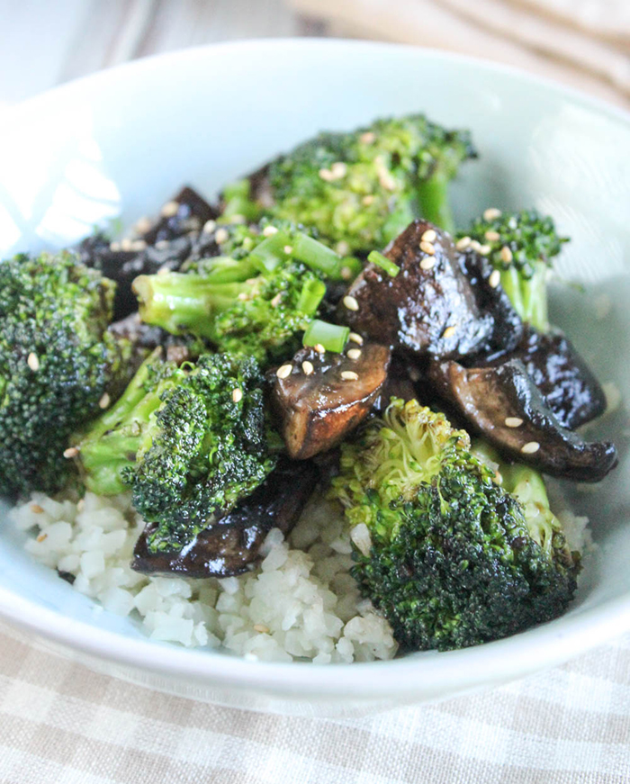

Korean BBQ Mushrooms and Broccoli

Description
A delicious and flavorful side dish
Ingredients
- Frozen Broccoli Florets (1 bag)
- Mushrooms (1 container)
- Garlic (1/2 clove)
- Onion (1/2)
- Olive Oil
- Korean BBQ Sauce/Marinade
Steps
- Prep: Cut onions and garlic into fine pieces, clean mushrooms, marinate mushrooms in korean bbq sauce (optional).
- Pour olive oil into sautee pan and heat over medium-high for 2 minutes.
- Place onions and garlic into sautee pan and heat until they begin to brown.
- Place frozen broccoli into sautee pan and cover for 5 minutes.
- Remove lid, add in mushrooms and korean bbq sauce.
- Stir occasionally, cook for another 8 minutes or until mushroom shrink.
- If mushrooms were not marinated, add last bit of korean bbq sauce, stir together, and serve.